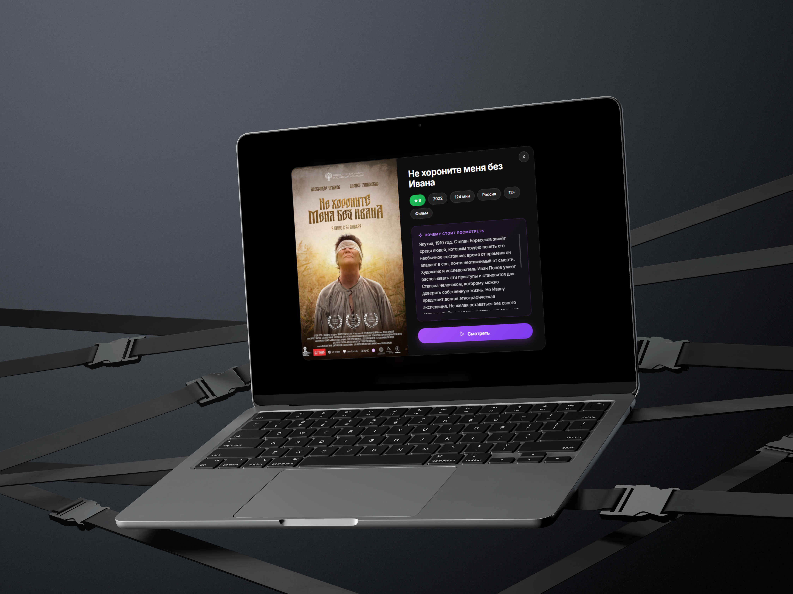

МувиМуд —
веб-сервис для подбора фильмов по настроению
Кейс о том, как создать цифровой сервис, который помогает найти кино под текущее эмоциональное состояние, а не просто по жанру или рейтингу.

Контекст
Выбор фильма на вечер часто превращается в долгий скроллинг каталогов. Пользователи устают от бесконечных списков и рейтингов, потому что в момент выбора ими движет не «жанр», а желаемое эмоциональное состояние. МувиМуд решает эту проблему, предлагая подбор по настроению.
Роль
Год
Тип
Инструменты
Коротко о проекте
Проблема
Огромный выбор фильмов и стандартные сортировки по жанрам не помогают подобрать кино под конкретный запрос. Пользователи долго листают каталоги, не находят подходящий вариант и в итоге затягивают выбор или вовсе откладывают просмотр
Что сделала
Исследование → концепция → сбор интерактивного прототипа → проведение юзабилити-тестирования на 5 пользователях и доработка интерфейса по результатам тестирования
Результат
Пользователи находят фильм за 3–4 клика. 5 из 5 пользователей успешно прошли сценарий «выбрать фильм по настроению» с первой попытки
Дискавери
Я проанализировала популярные киносервисы, а также изучила отзывы на них. В итоге я заметила общий паттерн: все они предлагают выбор по жанрам и рейтингам, но это не всегда отвечает запросу пользователя: стандартные фильтры не всегда помогают, когда нет конкретного запроса, а выбор фильма затягивается
Я проанализировала конкурентные решения, выдвинула гипотезы по улучшению сервиса и спроектировала интерфейс. Затем протестировала его на пользователях в глубинных интервью: по итогам выделила боли пользователей и перевела их в формат JTBD
На основе JTBD я вывела требования к функционалу, спроектировала путь пользователя и выбрала дизайн-решение. Первую версию интерактивного прототипа пришлось полностью переделать: она оказалась недостаточно функциональной и не отражала реальную логику подбора фильма. После двух итераций прототип был доработан до рабочего состояния
Проблемы
Огромный выбор
Выбор фильма превращается в утомительный процесс. К моменту, когда фильм всё-таки выбран, усталость накапливается — человек либо откладывает просмотр, либо смотрит уже без удовольствия
Формальные параметры
Существующие сервисы предлагают фильмы по жанрам, но в момент выбора человек хочет испытать конкретную эмоцию, а не просто посмотреть «комедию».
Нет быстрого ответа «зачем смотреть»
Пользователь видит постер и рейтинг, но не понимает, чем именно этот фильм зацепит лично его. Без краткого описания ценности приходится либо рисковать, либо откладывать просмотр
Подтверждение проблемы
Для обоснования решения был проведён анализ отзывов пользователей на популярных киносервисах (Кинопоиск, Отзовик, IRecommend), а также устные интервью с 5 респондентами. Люди жалуются на долгий выбор, усталость от скроллинга и отсутствие подбора по настроению.

Задачи в рамках проекта
На основе выявленных проблем я сформулировала задачи, которые определили направление дальнейшей работы
Сократить время выбора фильма до 3-4 кликов, убрав бесконечный скроллинг
Сделать акцент на настроении, а не на формальных жанрах
Дать быстрый ответ «зачем смотреть» через краткое ИИ-описание
Критерии успеха
Пользователь находит подходящий фильм за 3–4 клика
Пользователь понимает, почему фильм стоит посмотреть, благодаря блоку «Почему стоит посмотреть»
Все 5 респондентов успешно справились с выбором фильма с первой попытки
Ценность приложения
МувиМуд — сервис персонализированного подбора кино на основе эмоционального состояния пользователя
Главная задача: удержать пользователя в сервисе и повысить количество просмотров за счёт точных рекомендаций, которые не заставляют ждать и искать
Главная задача: закрыть самую частую боль — долгие поиски «того самого» фильма: вместо изучения жанров, рейтингов и рецензий достаточно обозначить своё настроение, и алгоритм быстро предложит подходящие варианты
Ключевые инсайты
В ходе 5 устных интервью и анализа отзывов на профильных сайтах я заметила паттерн: пользователи не ищут кино по жанру, им важно попасть в настроение. Однако существующие сервисы предлагают только формальные фильтры, что затягивает выбор.
4 из 5 респондентов и авторы отзывов на Кинопоиске и Отзовике упоминали, что долгий скроллинг и обилие выбора вызывают усталость. Им проще закрыть приложение, чем бесконечно листать постеры в поисках «того самого».
3 из 5 пользователей отмечали, что им не хватает понятного обоснования «зачем смотреть». Рейтинга и жанра недостаточно — нужна эмоциональная причина или краткое описание ценности, иначе выбор откладывается.
В отзывах к популярным киносервисам пользователи массово жалуются на отсутствие гибких фильтров и сортировок. Людям нужна возможность отсеивать контент по продолжительности, стране, наличию сериала и другим параметрам, чтобы быстрее находить нужное.
Анализ иностранных форумов (Reddit) показал: пользователи устали от агрессивных алгоритмов рекомендаций, которые «продвигают» свой контент. Они хотят находить фильмы по своему вкусу и настроению, а не быть жертвами маркетинга платформы.
Пользователи отмечают, что после обновлений интерфейсов привычные функции (сортировка по оценкам, оригинальные названия) исчезают или прячутся. Это вызывает раздражение и снижает лояльность к сервису — важно сохранять удобство навигации и не убирать нужные инструменты.
Персоны
Чтобы спроектировать продукт, который будет удобен разным типам пользователей, необходимо сегментировать аудиторию по потребностям.

Джоб стори
На основе персон и их болей я сформулировала ключевые сценарии использования продукта (JTBD) и связку «Боль → Решение». Это помогло перейти от абстрактных проблем к конкретным функциям интерфейса.
Гипотезы
В процессе работы я проверяла разные подходы к организации контента и навигации. Некоторые гипотезы подтвердились, некоторые пришлось пересмотреть.
Случайный подбор по настроению от ИИ
Гипотеза подтвердиласьМы предполагаем, что добавление функции случайного подбора (3 фильма), основанного на выборе настроения, повысит конверсию в выбор фильма на 15%, потому что решит проблему «паралича выбора», когда пользователь не хочет долго скроллить и ему нужен готовый список из нескольких вариантов под текущее состояние.
ИИ-помощник для сложных запросов
Гипотеза подтвердиласьМы предполагаем, что добавление ИИ-чата на главную страницу повысит удержание пользователей (Retention) на 10–15%, потому что решит проблему сложных или неосознанных запросов, когда человек не может описать свои чувства фильтрами (например: «хочу фильм, где герои сначала ненавидят друг друга, а потом влюбляются»), и получит то, что искал, не уходя на другие сайты.
Блок «Почему стоит посмотреть» (Глазик)
Гипотеза подтвердиласьМы предполагаем, что добавление краткого ИИ-описания на страницу фильма (кнопка «Глазик») снизит показатель отказов на странице фильма (Bounce Rate) на 20%, потому что облегчит выбор: пользователь сразу поймет, чем его зацепит картина, и не будет уходить читать сторонние рецензии.
Расширенная система фильтров
Гипотеза подтвердиласьМы предполагаем, что разделение фильтров на основные и дополнительные (по сюжету, атмосфере, темпу) и вынос их наверх повысит долю завершенных просмотров на 10%, потому что это решит проблему перегруза выбора и позволит пользователю точнее находить фильм под конкретный запрос.
Переход к похожим фильмам по настроению
Гипотеза подтвердиласьМы предполагаем, что блок «Похожие фильмы» с возможностью фильтрации по настроению и жанру на странице фильма увеличит глубину просмотра (страниц за сессию) на 15%, потому что позволит пользователю продолжить смотреть подборку в том же эмоциональном состоянии, не возвращаясь на главную.
Тематические подборки на главной
Гипотеза не подтвердиласьИзначально я сделала блоки с тематическими подборками фильмов. Но тестирование показало, что они перегружают главный экран и отвлекают от основного сценария. В итоге я убрала их, оставив только карусель и быстрый доступ к фильтрам.
Процесс работы
Дизайн начинался с бумажных набросков: сначала структура экранов и логика переходов, затем — проработка карточек и ИИ-сценариев. Ниже — ключевые шаги от первого эскиза к интерфейсу.


Первый прототип
Первая версия прототипа была собрана на основе тематических подборок. Мы предполагали, что пользователям будет удобно выбирать из готовых списков («Комедии на вечер», «Для всей семьи» и т.д.). Однако тестирование показало, что это перегружает интерфейс и не решает главную проблему — быстрый подбор под настроение.
*Архивная версия. В ней использовались тематические подборки, от которых мы позже отказались.

Юзер флоу
Прежде чем рисовать экраны, я спроектировала путь пользователя, который помог мне визуализировать, как именно пользователь будет двигаться по приложению.

.png)
Тестирование и итерация
Собранный прототип я проверила на 5 респондентах с помощью юзабилити-тестирования и глубинных интервью. Это позволило увидеть реальное взаимодействие с интерфейсом, а не только догадки.

Что было доработано
На основе успешных гипотез и обратной связи мы пересобрали логику сайта, сделав его более интуитивным и сфокусированным на эмоциях.
ИИ-помощник на главном экране
Решил проблему сложных запросов («где герои сначала ненавидят, а потом влюбляются») и снизил когнитивную нагрузку.
Фильтры разделены по смыслу
Вкладки «Случай», «Сюжет и сеттинг», «Тон и атмосфера», «Темп» заменили один длинный список — подбор стал точнее.
Блок «Почему стоит посмотреть»
Короткое ИИ-описание помогает быстрее принять решение и не уходить на сторонние сайты за рецензиями.
Случайный подбор по настроению
Кнопка «Подобрать случайно» избавляет от «паралича выбора» и показала высокую вовлечённость.
Главная страница
Интерфейс построен вокруг трёх точек входа: карусель рекомендаций, случайный подбор по настроению и ИИ-чат. Каждый путь ведёт к странице фильма, но решает разные задачи пользователя.
Каталог
Каталог — это страховка для тех, кто уже знает, чего хочет. Сетка постеров, расширенные фильтры по настроению и сюжету, сортировка и кнопка «Глазик» на каждой карточке.
Фильтры
Система фильтров разделена на две вкладки: «Основные» для быстрого сужения поиска и «Дополнительные» для точного подбора по настроению, сюжету и атмосфере. Это позволяет не перегружать интерфейс, но даёт глубину тем, кто ищет конкретное.
Страница фильма
Страница фильма — финальная точка всех сценариев. Здесь собран весь контекст для принятия решения: от постера и ИИ-описания до отзывов, клипов, команды и похожих картин.
Прототип можно потыкать руками
Это не видео и не скриншоты, а живой интерфейс. Карусель, ИИ-чат, фильтры и страницы фильмов работают как в финальной версии.
Перейти на сайт прототипаТестирование решения
Создание интерактивного прототипа позволило проверить гипотезы на реальных пользователях. Это вскрыло слабые места: некоторые интерфейсные решения оказались неочевидными. Я доработала их, опираясь на обратную связь.
<img src="images/test1.png">
<img src="images/test2.png">
Результат
После итераций на основе тестов интерфейс стал проще и честнее. Вот что изменилось по факту:
Люди перестали залипать в бесконечном скролле
Кнопка «Подобрать случайно» с фильтрами по настроению и длительности реально работает. Пользователи находят вариант за пару минут, а не тратят полчаса на пролистывание каталога.
«Глазик» заменил чтение длинных рецензий
Короткое ИИ-описание «Почему стоит посмотреть» даёт ровно столько контекستа, сколько нужно, чтобы понять: «моё это или нет». Пользователи реже уходят на сторонние сайты.
Главная страница стала чище и понятнее
Мы убрали визуальный шум тематических подборок. Теперь пользователь не теряется в горизонтальных лентах, а сразу видит три понятных пути: карусель, случайный подбор или ИИ-чат.
Точки роста
Текущая версия закрывает базовые сценарии. Вот что можно добавить на следующих этапах развития продукта:
Папки для сохранённых фильмов
Группировка «Смотрю сейчас», «На выходные», «Семейное» — чтобы избранное превратилось в удобную коллекцию, а не в плоский список.
Совместный просмотр
Возможность создать «комнату» с друзьями, вместе выбрать фильм под общее настроение через ИИ и смотреть его синхронно.
Умная история просмотров
Сервис сам запоминает, что пользователь уже видел, и учитывает это в ИИ-рекомендациях, избавляя от необходимости вручную ставить галочку «Просмотрено».
Интеграция с реальным API
Подключение к базе Кинопоиска или IMDb для расширения каталога с 10 фильмов до полноценной базы с живыми рейтингами.
Рефлексия
Этот проект стал для меня важным шагом в продуктовом дизайне. Я прошла путь от исследования до проверки гипотез и столкнулась с тем, что мои первоначальные идеи не всегда работают.
Интервью меняют всё
Я думала, что людям просто «неудобно скроллить каталог». Но исследование показало, что за этим стоит страх потратить вечер зря и эмоциональная усталость. Это полностью перевернуло мой подход к проектированию.
Я — не моя целевая аудитория
Это было сложно принять. Мне нравились тематические подборки на главной, но тесты показали, что они создают визуальный шум и путают пользователей. Пришлось без сожалений убрать то, что нравилось мне, но не работало для них.
Прототипирование экономит время
Если бы я сразу начала писать чистовой код, переделывать логику фильтров после тестов было бы мучительно. Интерактивный прототип позволил найти ошибки в UX до того, как они стали техническим долгом.
Простота сложнее, чем кажется
Сделать одну кнопку «Подобрать случайно», которая реально работает, оказалось сложнее, чем нарисовать десять вкладок с фильтрами. Настоящая простота требует глубокого понимания контекста пользователя.